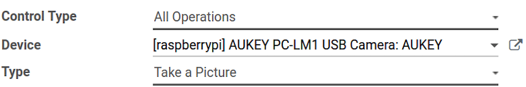
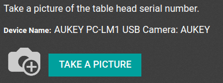

Conectar una cámara¶
Es posible conectar una cámara a la caja IoT de una base de datos de Odoo en pocos pasos. Una vez que una cámara está conectada a la caja IoT, puede usarla en los procesos de fabricación o vincularla a un punto de control de calidad. Esto le permite tomar fotografías cuando llega a un punto de control de calidad elegido o cuando presiona una tecla específica durante la fabricación.
Conexión¶
Para conectar una cámara a una caja IoT, solo conecte ambas con un cable. Esto se suele hacer con un cable USB de algún tipo.
Si la cámara es compatible no deberá configurar nada, pues se detectará en cuanto la conecte.

Vincular una cámara al punto de control de calidad de un proceso de fabricación¶
En la aplicación , puede configurar un dispositivo en un punto de control de calidad. Vaya a la aplicación y abra el punto de control deseado al que estará vinculada la cámara.
En el formulario de punto de control, puede editar el punto de control si selecciona el campo Tipo y hace clic en la opción Tomar una foto del menú desplegable. Esto hace que aparezca el campo Dispositivo, en el que puede seleccionar el dispositivo adjunto. Guarde los cambios, si es necesario.
Ahora podrá usar la cámara en el punto de control de calidad seleccionado. Cuando llegue al punto de control de calidad del proceso de fabricación, la base de datos le solicitará al operador que tome una foto.
Nota
También puede acceder a los puntos de control de calidad en la aplicación y seleccione el dispositivo que desee. Hay una pestaña de Puntos de control de calidad donde se pueden agregar con el dispositivo.
Truco
En un formulario de revisión de calidad, el Tipo de revisión también se puede especificar para Tomar una foto. Vaya a la aplicación para crear una nueva revisión de calidad desde la página de Revisiones de calidad.
Ver también
Vincular una cámara a un centro de trabajo en la aplicación Fabricación¶
Para vincular una cámara a una acción, primero necesita configurarla en un centro de trabajo. Vaya a . Luego, vaya al Centro de trabajo que desee y en donde usará la cámara para mostrar el formulario detallado de ese centro de trabajo específico. Luego, agregue el dispositivo en la pestaña Activadores de IoT `, en la columna :guilabel:`Dispositivos y haga clic en Agregar una línea.
Ahora el dispositivo de la cámara se puede vincular a la opción de columna desplegable de Acción que aparece como Tomar una foto. También puede agregar una clave para activar la acción.
Importante
Se elije el activador que esté al inicio de la lista. El orden de activadores es importante y los puede arrastrar en el orden que desee.
Nota
En la pantalla de guilabel:Orden de trabajo, un estado gráfico indica si la base de datos está conectada correctamente a la cámara.
Ver también